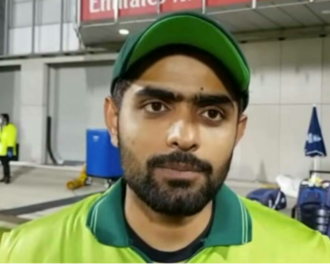
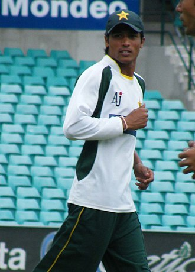
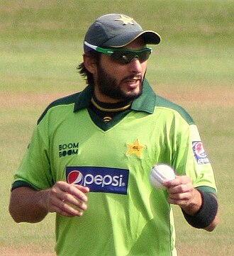
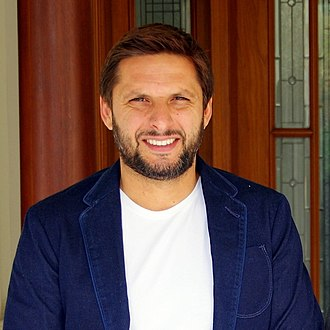

Mohammad Babar Azam (Urdu, Punjabi: محمد بابر اعظم; born 15 October 1994), is a Pakistani international cricketer and captain of the Pakistan national cricket team who is widely regarded as one of the finest batters in contemporary cricket being the only cricketer in the world to be in the top 3 rankings across all formats.[3][4][5][6][7] [8] He is ranked as the number one batter in ODIs and third in T20Is and Tests.[9] A right-handed top-order batter, he plays for and captains Peshawar Zalmi in the PSL and Central Punjab in domestic cricket of Pakistan.[10] With 42 wins, he is the joint most successful T20I captain of all time.[11] Azam's maiden T20 century of 122 which he scored against South Africa is the highest current individual score by a Pakistani in the format. Azam was a member of the Pakistan team that won the 2017 ICC Champions Trophy. 
Mohammad Amir (Urdu: محمد عامر; born 13 April 1992) is a Pakistan-born British citizen and a former Pakistani cricketer and bowler for the Pakistan national cricket team. He was a left-arm fast bowler and a left handed batsman. He took retirement from international cricket in 2020 at the age of just 28 years.[3][4] Amir made his first-class debut on November 2008, and his first One-Day International and Test appearances on July 2009 in Sri Lanka at the age of 17. He played his first international match during the 2009 ICC World Twenty20, helping the national side win the tournament.[5][6] 8 years later in England, he helped Pakistan win the 2017 ICC Champions Trophy, and was a major contributor with the ball in the final, getting the major wickets of Rohit Sharma, Virat Kohli, and Shikhar Dhawan. 
 Afridi runs his own charity, the Shahid Afridi Foundation which aims to provide education and healthcare facilities. He also teamed up with UNICEF to promote the anti-polio campaign in the country. During the 2019 Coronavirus pandemic, he was involved in helping people across Balochistan during the lockdown in the country. This led to him contracting COVID-19 on 13 June 2020.[10] Afridi was also nominated among the top 20 most charitable athletes of 2015. 